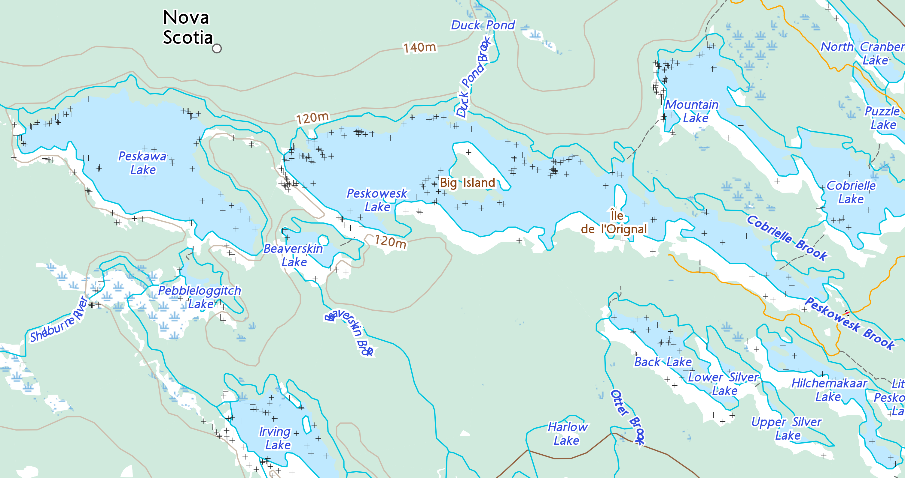

Day 3 of 5
Southern Lakes Loop
Lower Silver Lake (site 30) → Peskawa Lake (site 40) — the portage chain · Tue Aug 4 2026
9.8 km · ≈4.5 h paddling + carries
Carries today: D 440m · E 210m · F 320m · G 90m

I
H
J
L
M
G
E
N
K
D
F
B
C
START · SITE 30
CAMP · SITE 40
Topo: Toporama © Natural Resources Canada — Contains information licensed under the Open Government Licence – Canada · keji-camper (unofficial)